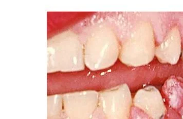

نسخه استخراجشده؛ ترجمه یا تأیید علمی انجام نشده است. وضعیت: captured
پیش از هر چیز این اصل را محکم کن:
🔑 هورمونهای جنسی علت ژنژیویت نیستند؛ آنها شدت پاسخ التهابی به همان مقدار پلاک را افزایش میدهند. بدون پلاک، تغییرات هورمونی بهتنهایی ژنژیویت نمیسازند.
در دوران بلوغ، پاسخ التهابی به مقدار ناچیزی پلاک هم شدید میشود.
بارزترین یافته: بزرگشدگی پاپیلای بیندندانی، بهویژه در نواحی قدامی.
پس از گذر از بلوغ، شدت پاسخ کاهش مییابد — اما اگر پلاک باقی بماند، التهاب هم باقی میماند.
افزایش خفیف تراوش مایع شیار لثهای و گاهی تشدید علائم پیش از قاعدگی؛ معمولاً خفیف و بدون نیاز به درمان اختصاصی.
| ویژگی | جزئیات |
|---|---|
| شیوع | بسیار بالا؛ از شایعترین تغییرات دهانی بارداری |
| اوج شدت | سهماهه دوم و سوم |
| محل غالب | نواحی بیندندانی و قدامی |
| تغییر میکروبی | افزایش چشمگیر پرووتلا اینترمدیا |
| پس از زایمان | بهبود چشمگیر، به شرط کنترل پلاک |
این باکتری برای رشد به ویتامین K نیاز دارد. پروژسترون و استرادیول میتوانند جایگزین ویتامین K شوند و بهعنوان فاکتور رشد عمل کنند. افزایش شدید این هورمونها در بارداری، مزیت انتخابی به پرووتلا اینترمدیا میدهد.
⚠️ نکته کلیدی: شدت ژنژیویت بارداری بیش از آن است که مقدار پلاک توضیح دهد — و این دقیقاً نشانه نقش تعدیلکننده هورمونهاست.
تودهای قرمز، براق و بسیار مستعد خونریزی، اغلب پایهدار.

محل معمول: ناحیه بیندندانی، بیشتر در فک بالا و نواحی قدامی.
معمولاً در سهماهه دوم ظاهر میشود.
از نظر بافتشناسی همان گرانولوم پیوژنیک است؛ «تومور بارداری» نام گمراهکنندهای است چون نئوپلازی نیست.
پس از زایمان اغلب خودبهخود پسرفت میکند.
پایه درمان: حذف دقیق پلاک و آموزش بهداشت — نه دارو.
ایمنترین زمان برای درمان انتخابی: سهماهه دوم.
برداشتن جراحی اپولیس در بارداری به تعویق میافتد، مگر آنکه خونریزی شدید، درد یا اختلال در جویدن ایجاد کند — چون احتمال پسرفت خودبهخودی و عود در صورت برداشتن زودهنگام بالاست.
در سهماهه سوم، وضعیت طاقباز طولانی میتواند به سندرم هیپوتانسیون وضعیتی بینجامد؛ بیمار را کمی به پهلوی چپ بچرخان.
⚠️ اشتباه رایج ۱: هورمون تعدیلکننده است؛ علت همچنان پلاک است.
⚠️ اشتباه رایج ۲: اپولیس بارداری نئوپلازی نیست و اغلب خودبهخود پسرفت میکند.
⚠️ اشتباه رایج ۳: سهماهه دوم ایمنترین زمان درمان انتخابی است.
نوع سؤال: ساخت کلمه · 2 خانه
حروف منبع: پرووتلا · اینترمدیا